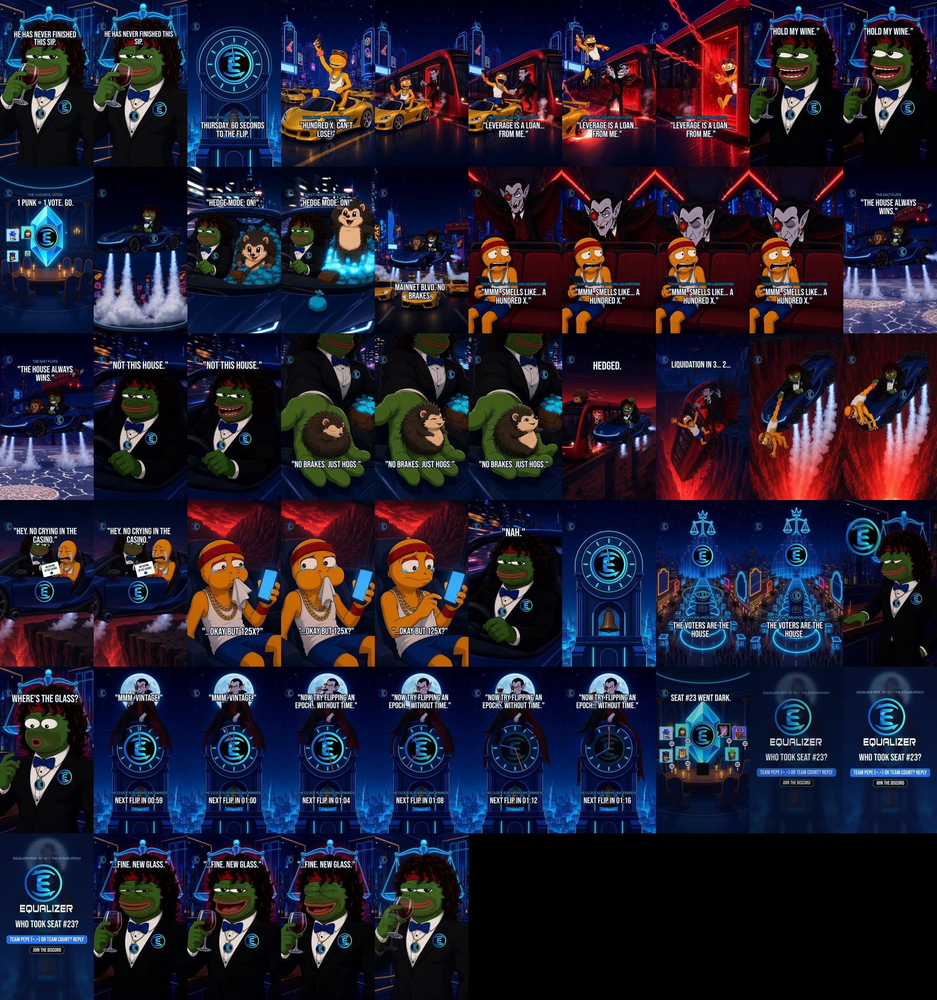

Equalizer Pepe · Pilot EP. 01 "No Crying in the Casino"
This is the full pilot (54.1s) with the locked cast. It is for review only and has not been posted anywhere. Built Thu 22 Oct 2026 (AEDT, Sydney).
15s teaser (S01–S09 + tag)
Cast (locked 22 Oct, option A for everyone)
| Character | Voice (ElevenLabs Voice Design, original) | Ep01 lines |
|---|---|---|
| EQ Pepe | EQPepe-CoolCat: warm, grinning American mid-baritone | L3 L7 L9 L11 L12 L14 |
| Count Rekula | EQPepe-Rekula: silky low Transylvanian purr, paced 1.3x | L2 L5 L6 L13 |
| 100x Larry | EQPepe-Larry: Jersey gym-bro tenor that cracks | L1 L10 |
| Hedgy | EQPepe-Hedgy: bright, squeaky cartoon sidekick | L4 L8 |
| Vivienne · Announcer · Contessa · Scarlett | saved for S1 (not in Ep01) | — |
| Queenie | approved but not saved (no free voice slot); preview, seed and prompt are backed up | — |
QA notes
- Logos: every mark is the real icon.png, burned into the plate before animation and then re-stamped by the tracker. Tracking confidence was 1.0 on the pins, pendants and clock face (S05, S11, S12/S19, S13, S21, S23, S26), and on the S11 door. On the S14 and S16 doors the stamp fades out during the fast roll and dive, and the burned-in mark (animated by Kling) carries through, so it is slightly soft but never stuck. Stills (S17 door hero, S20 marquee and clock, S22 pin/pendant) are exact. The TL watermark is on every shot except the end card. No Tesla or Lambo badges, no Shadow Exchange.
- Lip-sync: S05 "Hold my wine." checked frame by frame: the mouth opens at the first syllable (7.74s), rounds on "my w-", and closes about 0.15s after the line ends, with a grin throughout. S12 "Not this house.", S19 "Nah.", S10 (the Count, with Larry silent) and S26 "…Fine. New glass." are all driven by the actual line audio.
- Dialogue clarity: every line sits at least 4 LU over the bed. The tightest are L1 (4.2, under the Thursday bell tail) and L12 (4.5, right after the DING).
- Known soft spots: in S14 the hedgehog ball bursts into a spark flash (it reads as the "HEDGED" impact, but the coupling snap isn't shown). In S16 Kling swings Larry up and over rather than a clean pull-up. In S15 the "Last Chance Lounge" sign was painted out to keep AI text off screen.
Spend (PZERO, whole pilot)
| Shot | Model | Request id | USDC |
|---|---|---|---|
| s07 | Kling 2.6 Pro | e03fbbc4-8986-430e-a055-a6be048b5ee7 | 0.156 |
| s09 | Kling 2.6 Pro | f4426c3a-7650-482c-a1d6-a2eb628dad46 | 0.156 |
| s03 | Kling 2.6 Pro | 6f8ab5d4-ff07-4c7d-93d6-7a6a4349ba38 | 0.156 |
| s04 | Kling 2.6 Pro | 43d7e967-dc71-4486-9fca-25489601bc25 | 0.156 |
| s08 | Kling 2.6 Pro | aca83313-3470-455e-bbe2-b6bee751b70b | 0.156 |
| s05_wan | Wan 2.7 lip-sync | 2c1a5aac-0c88-45e1-90e7-bc3c0509fc49 | 0.220 |
| s10_wan | Wan 2.7 lip-sync | 7fd81e28-a11e-4c78-9bff-4325592ee2c0 | 0.220 |
| s05_wan_v2 | Wan 2.7 lip-sync | d0b0abfe-e3b4-4a04-a957-f895365f1d34 | 0.220 |
| s11 | Kling 2.6 Pro | 809751b7-f65f-4658-8e0f-f54bc0b339b0 | 0.156 |
| s13 | Kling 2.6 Pro | 908b3a43-6731-4b8a-a95d-58ba04016a91 | 0.156 |
| s14 | Kling 2.6 Pro | 9fc23e81-3cfc-42a0-a95d-3abd76615af3 | 0.156 |
| s15 | Kling 2.6 Pro | ac8ad06e-80af-42b8-afb2-8e7a4eec6117 | 0.156 |
| s16 | Kling 2.6 Pro | c04812bf-e050-4128-88eb-11ac9337f072 | 0.156 |
| s18 | Kling 2.6 Pro | def320a9-57b4-4cbe-afaa-cf5f0d56ed6e | 0.156 |
| s21 | Kling 2.6 Pro | 16c18a34-c826-41e0-aadc-3f478e09edf9 | 0.156 |
| s23 | Kling 2.6 Pro | e70a29e6-f273-42ac-95fb-40138c5d4122 | 0.156 |
| s12s19_wan | Wan 2.7 lip-sync | e2fd77d3-55cb-4831-a3bc-bd5ab1ef0871 | 0.220 |
| s26_wan | Wan 2.7 lip-sync | 67ab4b9b-a63b-4b45-9fcd-b66371fc3e35 | 0.220 |
| s10_wan_v2 | Wan 2.7 lip-sync | a643dfa8-a93a-4a45-8023-60f1b6d3e05a | 0.220 |
| Total | 3.348 | ||
Contact sheet (every 1s)

Full script, beat sheet and logo plan
EQUALIZER PEPE · PILOT · EP. 01 "NO CRYING IN THE CASINO"
Format: 41.0s · 9:16 · 1080×1920 · 30fps · burned-in captions · loops seamlessly · review only, never posted by agents.
Next episode: EP. 02, "THE STOLEN EPOCH".
Source of truth: Season 1 Bible canvas (S1 tabs). Where this script departs from the Bible, the change is flagged under Decisions for Blake at the end.
Locked look: first-tux face and suit on the muscular #7 body (character/master-tux.jpg). No lean or skinny tux, ever.
Logline (the full episode)
It's Thursday, 60 seconds to the epoch flip. On the Boomtown Strip, 100x Larry is dripping in gold chains and sitting on a rented gold supercar when his liquidation wristband blinks red. The Leverage Tram slams in and Count Rekula, the vampire market maker who feeds on liquidations, drags Larry aboard, bound for Liquidation Cliffs. Across town, EQ Pepe's sip is interrupted again: "Hold my wine." The =Council of =PUNKs votes him out the door. Pepe hops the hissing compressed-air roadster off the roof with Hedgy Hogsworth riding shotgun, chases the tram down Mainnet Blvd (a barrel roll over a row of Lambos), and pulls level with the Count: "The house always wins." "Not this house." Hedgy curls up ("No brakes. Just hogs."), Pepe bowls him, the coupling snaps, and the one-handed catch lands over the red abyss. "No crying in the casino." Larry: "Okay but… one twenty-five x?" "No." The Thursday bell rings and Pepe says "Balance restored." Back at the bar, his glass is gone. The Count is perched on the Epoch Clock, sipping it, and the hands start running backwards. "Mmm. Vintage. Now try flipping an epoch… without time." On the =Council, seat #23 (the Masked =Equalizer) goes dark. Loop: "…Fine. New glass."
Why this is the pilot: it stays character first and product last. Equalizer appears as the pin, the pendant, the car decal, the clock face, the Council gem, the casino signage, the watermark and the end card, and the product shows up only as the punchline: the voters are the house (the Thursday bell and the =Council). The cliffhanger stacks three hooks that each need EP. 02: the stolen Glass, the clock running backwards with a live countdown, and a dark =PUNK seat.
Three cold opens (the first 2.5s)
| # | Name | Frame 1 | Hook text | Why it could work | Risk |
|---|---|---|---|---|---|
| A ⭐ | The Sip | ECU: the rim of the glass touching Pepe's lips, (=,=) eyes, the real pin and pendant in frame. Clink. At 1.4s, hard cut to the Epoch Clock clunking to 11:59 and the Thursday bell DINGs. | HE HAS NEVER FINISHED THIS SIP. | Face plus motion plus a mystery in frame 1, and the series' running gag lands in a single second. The loop is perfect because the last frame (a fresh glass rising) is frame 1, so every replay counts. Pepe's calm against the bell reads instantly. | Calm can read as slow if the push is weak, so the cut lands at 1.4s, not 2s. |
| B | Last Stop | POV inside the red Leverage Tram: Larry's wristband blinking 100x red, doors slamming, PA chime. | NEXT STOP: LIQUIDATION CLIFFS. | Pure CT pain (liquidations), instantly relatable, and it opens on the stakes. | Frame 1 isn't our hero. Larry isn't known yet, so viewers have no reason to care in the first second. The loop is weaker. |
| C | Feeding Time | Count Rekula's monocle fills the frame, showing a liquidation heatmap of Boomtown. He inhales like a sommelier. | HE FEEDS ON YOUR LIQUIDATIONS. | A strong villain intro, and menace makes people stop scrolling. | It makes the villain the show, puts red in the first frame, and spends the reveal too early. |
Pick: A, "The Sip". The Bible's format rule says frame 1 is Pepe's face, motion and a 3–6 word hook; the episode needs a seamless loop; and the sip is the series signature. B and C are folded into the next 4 seconds anyway (the wristband at 2.5s, the Count at 4.1s), so the episode delivers all three hooks inside 6 seconds.
Cast in this episode
- EQ Pepe: locked master (muscular, curly hair, red headband, stubble, (=,=) eyes, black tux, blue bow tie). Wears ONE gold chain with ONE round pendant carrying the real Equalizer mark, plus the real lapel pin. Never bets, never panics. The cool cat of the crew (Blake, 22 Oct): carefree, warm, grinning, a legend and a real boys' boy everyone wishes they were. American. Not smug, not sinister; the Count carries all the menace. Voice: ElevenLabs
EQPepe-CoolCat(WZiM2eTBGp9Ca7xuakiR), eleven_v3. - 100x Larry: bald orange-yellow gecko, red sweatband, white tank, five gold chains, gold rings, red liquidation wristband, rental gold supercar with a blank RENTAL tag (no badges). Kokoro am_echo recipe.
- Count Rekula: the season villain (
refs/count-rekula-sheet.jpg): gaunt cartoon vampire, bat ears, red heat-map monocle, wick fangs, a rug-cape with tassels and a red candle-wick lining. Floats. Kokoro bm_lewis −3 st with a short echo. - Hedgy Hogsworth (HEDGY guest, the only meme-coin guest): brown quills, tan face, brown satchel of glowing cyan bribe bags (
refs/hedgy-sheet.jpg). Never blue, no shoes, no gloves, no rings. Kokoro am_puck +6 st. He gets the best guest line: "No brakes. Just hogs." - The =Council (=PUNKs, cleared by Blake): the 7 Discord-matched punks as 2D pixel sprites from their real token art: #2 POPO, #3 Bolt, #12 Cyber Pep, #19 Boon Frogga, #28 =Bisonish Chad, #34 =Tuna, #40 =Unholy. #23 the Masked =Equalizer appears only as an empty, dark seat (the cliffhanger).
Every line (in order)
| ID | Time | Who | Line | Words |
|---|---|---|---|---|
| L1 | 2.70 | 100x LARRY (selfie, manic) | "Hundred x. Can't lose!" | 4 |
| L2 | 4.05 | COUNT REKULA (from the tram door, silky) | "Leverage is a loan… from me." | 6 |
| L3 | 6.50 | EQ PEPE (easy grin, no-look, lip-synced) | "Hold my wine." | 3 |
| L4 | 10.10 | HEDGY (bursting out of the bribe bags) | "Hedge mode: ON!" | 3 |
| L5 | 12.70 | COUNT (sniffing Larry like a wine) | "Mmm. Smells like… a hundred x." | 6 |
| L6 | 15.30 | COUNT (at the tram window, alongside) | "The house always wins." | 4 |
| L7 | 16.90 | PEPE (eyes front, one hand on the yoke, grinning) | "Not this house." | 3 |
| L8 | 17.90 | HEDGY (curling into a spiky ball) | "No brakes. Just hogs." | 4 |
| L9 | 23.60 | PEPE (warm, big-brother, handing over a napkin) | "Hey. No crying in the casino." | 6 |
| L10 | 25.10 | LARRY (sniffles, phone already up) | "Okay but… one twenty-five x?" | 5 |
| L11 | 26.40 | PEPE (soft laugh, music out) | "Nah." | 1 |
| L12 | 27.90 | PEPE (V.O. over the Thursday bell, satisfied) | "Balance restored, boys." | 3 |
| L13 | 32.20 | COUNT (on the clock face, sipping Pepe's glass) | "Mmm. Vintage. Now try flipping an epoch… without time." | 9 |
| L14 | 38.80 | PEPE (S26 loop, laughs softly, shrugs, new glass) | "…Fine. New glass." | 3 |
13 lines and 55 words in 41s. Pepe has 5 lines (16 words), none over 5 words. "Balance restored." is Pepe's last spoken line, followed by the villain's twist (the Bible's ending rule). All lines survive literal translation.
Beat sheet and shot list (timecodes in the final cut)
The 15s check-in cut runs 16.3s and uses slightly tighter timings than this table (S05 6.30–7.70, S10 12.45–15.60, tag 15.60–16.30). Its edit list is
build/cut_base.py.
Legend: PRODUCED = in the 15s check-in cut now. TO MAKE = back half. Methods: GI = cursor GenerateImage plate with refs (free); K26 = Kling 2.6 Pro i2v via PZERO (~0.156); KV3 = Kling v3 Standard with audio (~0.168 per 3s); PIL = coded animation/compositing; RB = Rhubarb lip-sync on a still with 3 mouth plates.
| # | In–Out | Beat | Shot / action / camera | Method | Caption (Bebas, safe zone) | SFX / music | Status |
|---|---|---|---|---|---|---|---|
| S01 | 0.00–1.40 | HOOK | Pepe ECU, rim of the glass on his lips, glass dead level, (=,=) eyes. Casino-lounge scale soft behind. Slow push-in 1.00→1.06. | GI + PIL push | HE HAS NEVER FINISHED THIS SIP. | Glass clink at 0.03; lounge bossa bed (Rhodes + upright bass). | PRODUCED |
| S02 | 1.40–2.50 | THE BELL | Epoch Clock face (real mark at the centre). PIL hands: the minute hand clunks 11:58→11:59, the bell DINGs once, a cyan ring pulses. | GI + PIL hands | THURSDAY. 60s TO THE FLIP. | Clock clunk → Thursday bell DING; the bossa ducks. | PRODUCED |
| S03 | 2.50–4.05 | THE DEGEN | Larry on the seat back of a gold rental supercar on the Strip, phone up, five chains swinging; the red wristband starts blinking. L1. | GI + K26 | 100x LARRY. WRISTBAND: RED. | Wristband beep-beep (rising); a distant V12 rev. | PRODUCED |
| S04 | 4.05–6.40 | THE TRAM | The red Leverage Tram slams in, doors hiss open, Count Rekula floats in the door and snatches Larry's wrist. L2. | GI + K26 | NEXT STOP: LIQUIDATION CLIFFS. | Tram brake screech, steam hiss, organ chord stab → pizzicato tango figure. | PRODUCED |
| S05 | 6.40–7.80 | HOLD MY WINE | Pepe close, eyes slide toward the alarm glow, glass held out to the side; the real lapel pin pulses cyan (his "spidey sense"). L3, lip-synced. | GI (logo-burned) + Wan 2.7 audio-driven lip-sync (PZERO ~0.22) + pin and pendant re-stamped with logo_track | HOLD MY WINE. | Music drops to a single held bass note; glass tink. | PRODUCED |
| S06 | 7.80–8.70 | =COUNCIL | Candle-lit round table under the glowing veNFT gem (real mark). Pixel =PUNKs pop up in their chairs with "=" paddles. | GI + PIL sprites | =COUNCIL: 1 PUNK = 1 VOTE. GO. | Gavel knock, 8-bit blips per punk. | PRODUCED |
| S07 | 8.70–10.00 | LAUNCH | The navy roadster hops off the rooftop pad: four straight pale blue-white air jets, white vapour rolling across the pad. | GI + K26, logo tracked | — | Hard cut into the 140 bpm synthwave; big air PSSHHH (no engine roar). | PRODUCED |
| S08 | 10.00–11.30 | GUEST | Two-shot in the cockpit: Hedgy bursts out of a pile of cyan bribe bags and salutes; Pepe steers one-handed, side-glance. L4. | GI + K26, pin tracked | GUEST: HEDGY HOGSWORTH | Bag rustle, squeak, wind. | PRODUCED |
| S09 | 11.30–12.90 | THE STRIP | Mainnet Blvd: the roadster hops and barrel-rolls over a row of gold Lambos (no badges), side puffs firing; the tram flees on the rail ahead. | GI + K26, door tracked | MAINNET BLVD. NO BRAKES. | Air-puff bursts, whoosh-by, car alarms chirp below. | PRODUCED |
| S10 | 12.90–15.00 | THE COUNT | Inside the tram: the Count looms, rug-cape spread, sniffing Larry like a vintage. L5. | GI + Wan 2.7 talking two-shot, Larry kept silent (PZERO ~0.22) | HE FEEDS ON LIQUIDATIONS. | Organ drone, wristband beeps quicken. | PRODUCED |
| S11 | 15.00–16.70 | DUEL | Roadster pulls level with the tram over the Salt Flats; the Count at the window. L6. | GI + K26 | — | Wind roar, tram rattle; the music thins. | PRODUCED |
| S12 | 16.70–17.80 | THE LINE | Pepe, eyes front, one hand on the yoke. L7. The music cuts for 0.3s. | GI + KV3 (or RB) | NOT THIS HOUSE. | Silence → bass drop. | PRODUCED |
| S13 | 17.80–19.00 | GUEST LINE | Hedgy curls into a spiky ball in Pepe's palm. L8. | GI + K26 | NO BRAKES. JUST HOGS. | Spiky shhk, squeak. | PRODUCED |
| S14 | 19.00–20.30 | BOWL | Pepe bowls Hedgy overarm along the tram roof; the ball snaps the coupling and Larry's carriage detaches. | GI + K26 | HEDGED. | 0.2s silence → CLANG; the music returns at half-time. | PRODUCED |
| S15 | 20.30–21.50 | THE EDGE | The Count's car plunges toward his Last Chance Lounge; he yanks his rug-cape and vanishes into bats. Larry's carriage skids, teeters, tips over the red abyss. | GI + K26 | LIQUIDATION IN 3… 2… | Rock crack, bat flutter, scream sting. | PRODUCED |
| S16 | 21.50–23.30 | THE CATCH | The roadster dives, jets blasting upward; Pepe makes a one-handed wrist catch over the red glow. | GI + K26, door tracked | — | Impact, brass hit, air blast. | PRODUCED |
| S17 | 23.30–25.00 | THE NAPKIN | Hover at the ledge: door-decal hero shot. Pepe hands sobbing Larry a cocktail napkin printed NO CRYING IN THE CASINO (PIL text plus a small real mark). L9. | GI + still push, PIL napkin | NO CRYING IN THE CASINO. | Bossa returns, soft. | PRODUCED |
| S18 | 25.00–26.30 | RELAPSE | Larry blows his nose on the napkin, phone already up. L10. | GI + K26 | …OK BUT 125x? | Phone blip. | PRODUCED |
| S19 | 26.30–27.30 | "NAH." | Pepe ECU with an easy laugh, L11, lip-synced. All audio out except the line. | GI + RB | — | Dead silence. | PRODUCED |
| S20 | 27.30–29.30 | THURSDAY BELL | The Clock strikes 12:00; a cyan shockwave rolls down the Strip; every voter booth lights level; =PUNK paddles go up; the Equilibrium marquee carries the real mark. L12 (V.O.). | GI + PIL (clock and shockwave) + K26 for the crowd | THE VOTERS ARE THE HOUSE. | DING → coin pour → "balance restored" chime resolves. | PRODUCED |
| S21 | 29.30–30.80 | THE REACH | Scale Room bar (real mark on the back wall): Pepe reaches for his glass without looking… and grabs air. A wet ring and one red candle wick lie on the bar. | GI + K26 | — | Lounge swells, then a vinyl stop. | PRODUCED |
| S22 | 30.80–31.80 | SHOCK | (=,=) eyes snap wide; camera shake. | GI + PIL shake | WHERE'S THE GLASS? | Sting. | PRODUCED |
| S23 | 31.80–34.60 | CLIFFHANGER | The Count perches on the Epoch Clock face sipping Pepe's glass, drapes his rug-cape over the mark, and the hands start spinning backwards. The bell cracks. L13. | GI + K26 + PIL hands | NEXT FLIP: 00:59 → 01:00 → 01:01 ↺ | Organ chord, reversed tick-tock, bell crack. | PRODUCED |
| S24 | 34.60–35.60 | SEAT #23 | =Council: one candle snuffs out; seat #23 sits empty and the mask is gone. | PIL on the S06 plate | SEAT #23 WENT DARK. | A single candle fff. | PRODUCED |
| S25 | 35.60–38.60 | END CARD | logo-01-white-text on navy #0A1633. EP. 02, THE STOLEN EPOCH. Reply prompt. | PIL (brand_overlay.end_card) | EP. 02 — THE STOLEN EPOCH · TEAM PEPE (=,=) OR TEAM COUNT? REPLY 👇 · JOIN THE DISCORD | Tick-tock → signature DING (one short coin pour). | PRODUCED |
| S26 | 38.60–41.00 | LOOP | Pepe pulls a fresh glass from under the bar and raises it; the push lands exactly on S01 frame 1. | S01 plate reversed push (PIL) | …FINE. NEW GLASS. | Lounge bossa resolves into the S01 clink (the loop seam). | PRODUCED |
Pace: 26 shots in 41s (average 1.58s; action stretch 1.1–1.7s; nothing over 2.8s except the cliffhanger hold). Payoffs land at 4.0 (the tram), 8.7 (the launch), 11.3 (the barrel roll), 16.7 (Not this house), 20.3 (HEDGED), 23.3 (the catch), 27.3 (the bell) and 31.8 (the cliffhanger).
Loop mechanics: S26 ends on S01's exact first frame (same plate, same 1.00 scale, same caption position) and the audio seam is the glass clink, so the replay starts mid-gag.
Retention hooks every 5–7s (the "what happens next" chain): wristband red (2.5) → the Count grabs Larry (4.0) → "Hold my wine" (6.4) → the launch (8.7) → the Count is about to feed (12.9) → the duel line (16.7) → the edge (20.3) → the catch (21.5) → "125x?" (25.0) → the bell (27.3) → the glass is gone (29.3) → the clock runs backwards (31.8) → seat #23 (34.6).
Logo placement plan (real icon.png only, never AI-drawn)
Pipeline per shot: GI plate with blank discs where the mark goes → burn the real icon.png in at 1080×1920 (build/burn.py, disc mode) before i2v → Kling animates it with the object → trim to the window where the mark holds → re-stamp crisp with logo_track.py (OpenCV LK + ECC, smoothstep fade-out when confidence drops) → static TL watermark on the master. If tracking fails, cut the shot shorter or reframe; a mark never sits stuck while the object moves.
| Shot | Lapel pin | Chain pendant | Roadster door / hood | Casino / HQ signage | Epoch clock face | Other | Watermark |
|---|---|---|---|---|---|---|---|
| S01 | ✅ burned (96px@720 → 154px) | ✅ burned (gold bezel) | — | — | — | — | TL |
| S02 | — | — | — | — | ✅ centre, under the PIL hands (static object, static camera) | — | TL |
| S03 | — | — | — | Strip marquees left blank (other chains' casinos never carry marks) | — | Larry's car: no badges, blank RENTAL tag | TL |
| S04 | — | — | — | — | — | Tram: blank destination sign | TL |
| S05 | ✅ + PIL cyan glow pulse | ✅ | — | — | — | — | TL |
| S06 | — | — | — | — | — | ✅ =Council veNFT gem centre (real mark) | TL |
| S07 | ✅ tracked | — | ✅ door decal + hood-tip disc, tracked | — | — | — | TL |
| S08 | ✅ tracked | — | — | — | — | — | TL |
| S09 | ✅ (tiny, rides the burn) | — | ✅ door decal tracked, fading on the roll | — | — | Lambos: no badges (hood badge painted out) | TL |
| S10 | — | — | — | — | — | Count's tram: no Equalizer marks (villain space) | TL |
| S11–S16 | ✅ where visible | ✅ where visible | ✅ door decal tracked in S11, S16 | — | — | — | TL |
| S17 | ✅ | ✅ | ✅ HERO: door decal large and flat to camera (still + push = exact) | — | — | ✅ napkin corner mark (keyed) | TL |
| S20 | — | — | — | ✅ Equilibrium marquee + the Scale tower crown sign | ✅ clock face | ✅ Council gem in the inset | TL |
| S21 | ✅ | ✅ | — | ✅ Scale Room back-wall badge | — | — | TL |
| S23 | — | — | — | — | ✅ visible, then covered by the Count's cape (the sabotage reads as the mark going dark) | — | TL |
| S24 | — | — | — | — | — | ✅ Council gem (dimmed) | TL |
| S25 | — | — | — | — | — | ✅ END CARD: logo-01-white-text on #0A1633 | none (the lockup is the mark) |
| S26 | ✅ | ✅ | — | — | — | — | TL |
Never: a Tesla T, a Lamborghini bull, a Sonic legacy mark, or an AI-redrawn Equalizer emblem. Captions and all text are set in code (Bebas Neue / Inter).
Sound and music plan
- Motifs (all synthesised on the box, licence-safe): the lounge bossa (Pepe: Rhodes, upright bass, brushed hats); the 140 bpm synthwave (action); a pipe-organ stab into a pizzicato figure (the Count); the Thursday bell (a single clean DING, against the casino's chaotic ding-ding); the roadster hiss (filtered noise bursts, never an engine roar); the wristband beep; 8-bit blips for the =PUNKs.
- Rules: music ducks 8–12 dB under every line. Silence beats sit under "Not this house." and "No." Dialogue high-passed at 70 Hz with a +3 dB lift at 3.5 kHz; music high-passed at 90 Hz. Master at −14 to −16 LUFS integrated, −1 dBTP, AAC 192k / 48 kHz.
Captions
Bebas Neue, 2–5 words per card, white with a dark stroke, inside y 250–1500 and x ≤ 950 on 1080×1920 (clear of the right rail and the bottom UI). The hook card is on screen from frame 1. Speaker lines get their own caption cards (X autoplays muted).
Red-line check
No Shadow Exchange · no real-person likeness (all parody bodies; the Count is a cartoon vampire) · no Tesla or Lambo badges · no gambling CTA (the casino is satire; the degen's "can't lose" is punished inside the episode) · no APR, price or advice (100x / 125x are the gecko's gag) · no women as props (none in this episode; the female leads get agency episodes) · no second Furie-style frog (Boon Frogga and Cyber Pep appear only as =PUNK pixel sprites from their own token art) · no PNUT/GOAT/political coins · Pepe never bets and never says "the house always wins" (only the Count does; Pepe answers "Not this house.") · the "No crying in the casino" napkin is gentle, never scorn.
Decisions for Blake
- Chain: this script gives Pepe ONE gold chain with a round pendant carrying the real mark (per your note). The Bible's flex code had no chain. Confirm the chain is canon.
- Cliffhanger stack: keep all three (the Glass + the clock running backwards + seat #23 going dark), or cut seat #23 and save it for "The 14 Empty Seats"?
- =PUNK cameos: cleared; confirm we may show the 7 Discord-matched punks by token number on screen, and whether #1 Hoops appears in EP. 02.
- The duel line in the pilot: "The house always wins." / "Not this house." was planned for the finale. Using it now makes the pilot quotable; the finale can flip it again.
- Pepe's voice: the Kokoro voice C in the check-in cut is TEMP. A lighter Pepe voice is being cast; S05 (Wan lip-sync) will be re-rendered with it once it's locked (~0.22 USDC).
- Reply prompt: "TEAM PEPE (=,=) OR TEAM COUNT?" vs "WHO TOOK SEAT #23?"
Line changes: cool-cat pass (22 Oct 2026 20:10 AEDT, per Blake: "too sinister… he's the cool cat, a legend, a real boys' boy")
| ID | Before | After | Delivery (eleven_v3 tags) | Why |
|---|---|---|---|---|
| L3 | "Hold my wine." (deadpan) | "Hold my wine." (unchanged words) | [grinning] |
Hook kept; grin, not sneer. |
| L7 | "Not this house." (deadpan) | "Not this house." (unchanged words) | [relaxed, grinning] |
Hook kept; easy confidence vs the Count's menace. |
| L9 | "No crying in the casino." | "Hey. No crying in the casino." | [warm] |
The "Hey." makes it a mate picking Larry up, not a scold. |
| L11 | "No." | "Nah." | [laughs softly] |
Same refusal, said with a laugh; still one syllable for S19. |
| L12 | "Balance restored." | "Balance restored, boys." | [satisfied] |
Includes the crew; boys' boy energy. |
| L14 | (caption only) | "…Fine. New glass." (now spoken) | [laughs softly] |
The loop line, shrugged off with a grin. |
Pepe's renders: audio/vo_v2/L03,L07,L09,L11,L12,L14_pepe.wav (EQPepe-CoolCat, seed 7 except L09/L14 seed 11). Previous versions: build/SCRIPT_pre_coolcat.md, build/LINES_pre_coolcat.txt. |
||||
Cast note: Pepe's lines are locked; the rest of the crew's voices await Blake's casting pick (/workspace/eq-pepe-audio/CASTING.md). |
Final cut (22 Oct 2026, ~20:55 AEDT): 54.1s
The cast is locked (Blake, 20:26 AEDT: option A for every character; see /workspace/eq-pepe-audio/CASTING.md). All crew lines are ElevenLabs eleven_v3 on the saved EQPepe-* voices. Rekula is paced about 1.3x in post (rubberband, formant preserved).
Runtime grew from the planned 41s to 54.1s:
- about 1.2s of room before "Hold my wine" for Rekula's L2;
- the real crew lines run longer than the temp ones (L8 2.9s, L10 3.2s);
- the cliffhanger hold is 5.5s so L13 (4.5s of speech) ends before seat #23 goes dark;
- seat #23 gets a 1.6s power-down blip followed by silence;
- the end card holds for 3s ("WHO TOOK SEAT #23?").
Edit list: build/ep01.py (shots and audio cues). Renderer: build/edit2.py. Mix: /workspace/eq-pepe-audio/mix.py build/cue_full.json.
| # | In–Out | Renderer | Source |
|---|---|---|---|
| S01 | 0.00–1.40 | still | p01-sip-1080.jpg |
| S02 | 1.40–2.40 | clock | p02-clock-1080.jpg |
| S03 | 2.40–3.90 | clip | clips/raw_s03.mp4 |
| S04 | 3.90–7.35 | clip | clips/raw_s04.mp4 |
| S05 | 7.35–9.75 | clip | clips/s05_wan_v2.mp4 |
| S06 | 9.75–10.60 | council | p06-council-1080.jpg |
| S07 | 10.60–11.80 | clip | clips/s07_track.mp4 |
| S08 | 11.80–13.40 | clip | clips/s08_track.mp4 |
| S09 | 13.40–14.90 | clip | clips/s09_track.mp4 |
| S10 | 14.90–18.70 | clip | clips/s10_wan_v2.mp4 |
| S11 | 18.70–20.70 | clip | clips/s11_track.mp4 |
| S12 | 20.70–22.30 | clip | clips/s12_wan.mp4 |
| S13 | 22.30–25.10 | clip | clips/s13_track.mp4 |
| S14 | 25.10–26.40 | clip | clips/s14_track.mp4 |
| S15 | 26.40–27.60 | clip | clips/raw_s15.mp4 |
| S16 | 27.60–29.40 | clip | clips/s16_track.mp4 |
| S17 | 29.40–32.00 | napkin | p17-napkin-1080.jpg |
| S18 | 32.00–34.80 | clip | clips/raw_s18.mp4 |
| S19 | 34.80–36.00 | clip | clips/s12_wan.mp4 |
| S20 | 36.00–38.20 | bell | — |
| S21 | 38.20–39.70 | clip | clips/s21_track.mp4 |
| S22 | 39.70–40.70 | still | p22-shock-1080.jpg |
| S23 | 40.70–46.20 | countclock | clips/s23_track.mp4 |
| S24 | 46.20–47.80 | seat | p06-council-1080.jpg |
| S25 | 47.80–50.80 | card | — |
| S26 | 50.80–54.10 | loop | clips/s26_wan.mp4 |
Lip-sync: S05, S12 and S19 (one Wan job drives L7 and L11), S10 (L5 re-synced to the cast Rekula voice) and S26 (L14) all use Wan 2.7 audio-driven i2v.